Education and Projects
Web Design and Development
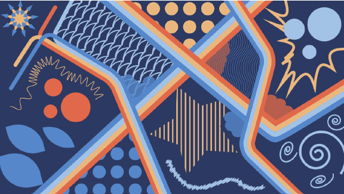Web Design and Development is meant to teach the fundamentals of digital layout for web development and how to properly create engaging interfaces for digital media. It also covers how to address technical challenges for digital mediums to deliver effective digital experiences. Lastly, it introduces basic content creation and sprint thinking independent of software platforms. My first experiences in the Web Design and Development were an interesting eye-opening for me. I never considered myself to be much of the artistic type, so when I found out that I would actually have to take design classes I really was not sure what to think. However, in my Digital Design Essentials class, I not only had the guidance from my professor and the courses learning objectives, but I also had the freedom to explore Adobe Illustrator which was the main software that I used for my designs. Although I learned a lot of things about designing, I wouldn't consider myself better at designing than an actual designer. I would say that this class gave me a interest towards design that I did not know I had. I found myself asking friends and family if they knew of any people who needed logo designs for anything because I wanted some sort of project to work on with these newfound tools I discovered.
Scripting for Internet Tech
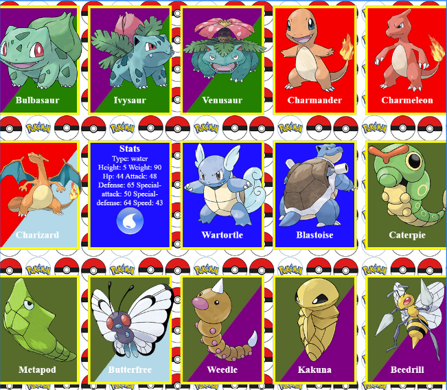Another class that I took my first semester here at UVU was a little more familiar to me than the design class I was taking. Scripting for Internet Tech's learning objectives are to learning how to write code using JavaScript as well as a small amount of HTML markup and CSS layout. It also introduces the fundamentals of Git for source code version control and project collaboration. This class did exactly what it said it would. It taught me how to write HTML, CSS, and JS along with other web development skills. I had a lot of fun during this class learning about how to access APIs using JSON and taking the data from those APIs to create cards that can flip with more details on the back. What I learned about Git in this class wasn't really too clear to me at the time, but I was excited to learn more about what it had to offer and why it was considered to be so important.
Web Essentials
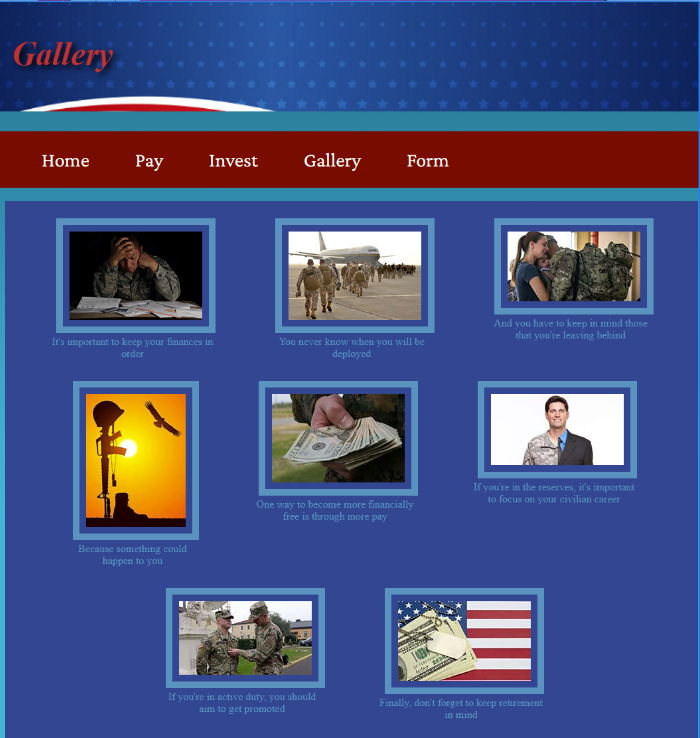Web Essentials was another class I took at the start of my time at UVU, and it taught exactly what it sounds like: web essentials. This was really my first class where I had to create a website from the ground up with full navigation and interactive elements. I developed multiple different web pages and linked them all together through a navigation menu bar. I learned different skills like creating forms, inserting embedded elements like videos, and formatting figure which contain images and caption. As you can tell from the couple of screenshots that I placed to the right, I'm a better developer than a designer. I'm not exactly sure what past Luke was thinking about with having a mix between salmon and pink as the background color for that form, but present Luke can definitely tell an eye-sore when he sees one. Looking back on this, it seems like I have come a long way from there, so hopefully that is right.
Digital Design Essentials
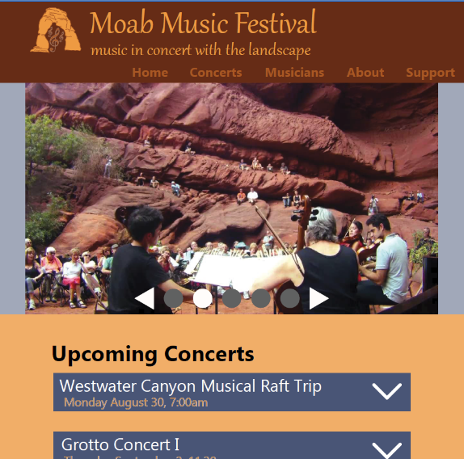In my second semester I started to get a little more into website design rather than just the logo and small element designs that I learned and practiced in the Digital Design Essentials class I took in the semester prior to this one. Interaction Design Essentials was the name of this class, and one of the core principles that I worked on in this class was the web design column grid layout which usually utilized 12 columns. I found a local non-profit's website and did my best to redesign it. I say that I did my best because design is still not a strong suit of mine. Throughout this course I definitely struggled with using proper fonts as well as putting together good color palettes for the site. I learned a lot about using fonts better and finding better color palettes, but I still think that my designs aren't really much to brag about. I guess it's a good thing that I like developing rather than designing.
Principles of Digital Design
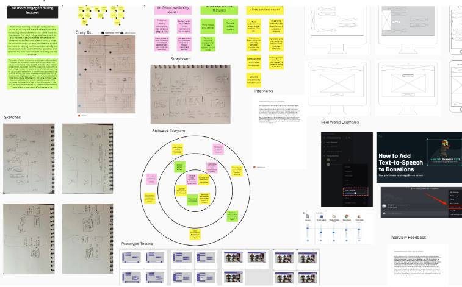Principles of Digital Design was all about learning about the process behind implementing an interactive and exciting new application. The class introduced me to a number of different team-based idea sharing strategies as well as how to use these strategies to come up with a design in a way other than just going with the first thing that comes to mind. Principles of Digital Design also covered what it was like to be responsible for proper time management and how to report your work and progress in your project through weekly sprint reports. This was an interesting class for me to learn from because prior to taking this class, I already had some experience with working in teams that had sprint meetings and sometimes even found myself doing projects in these teams which required idea-building exercises such as the ones I learned about in this class. Because of this, I found it very interesting to learn the academic side of the real-world application that I already had some experience with.
Media Formats and Outputs
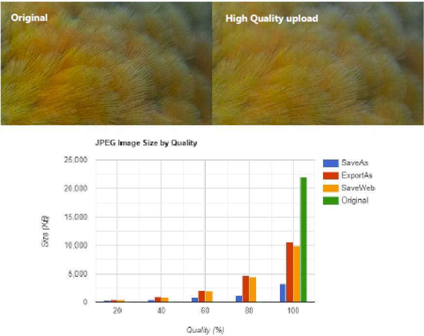Another class that I was taking in my second semester was Media Formats and Outputs. This class taught me about the different file types that are common in audio, visual, video, and sound. I learned about what file types are good for which applications and how the quality of some file types is either lost when compressed or how well that quality is reserved. I also did a deep dive into looking at how the size of the files changes based on the file type and how much compression took place. The visual aspects of the file types and compression that I learned about was the most interesting to me. Just like audio, video, and sound, visual file types and compression can either be lossy or lossless which means either that some quality was lost in the compression or it wasn't. One thing interesting about visual file types was the difference between raster and vector though. Raster is pixel based and loses sharpness when scaling the image up or down, whereas vector imaging is made up of mathematical paths and can be easily scaled up or down without losing sharpness.
Web Languages I
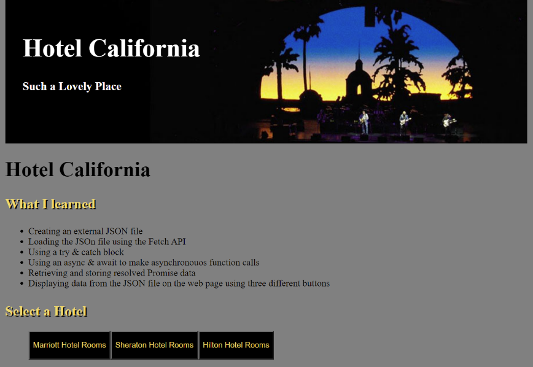In Web Languages I, another class I took my second semester, I got really good at putting my work into GitHub. I learned a number of different skills such as using the math library, manipulating the DOM through JavaScript, handling errors, and manipulating string objects. I had done some work with GitHub before, but I never really understood the benefits of using it. However, after this class, I started to realize just how much of an asset it is when you are working on code. The crazy thing is that I was just working by myself in my Git repository, and the tools I was using can prove much more useful when I start working in a team. This course also really taught me a lot about how JavaScript can be used to enhance the experience that you are able to give your users on a website.
Communicating Digital Design
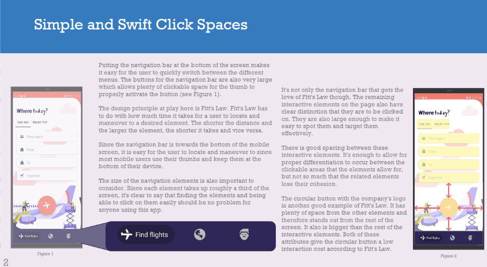One of the classes that I took my third semester here at UVU was called Communicating Digital Design. This class was for my Writing Enriched graduation requirement, so I knew that it the bane of my existence would be coming with this class: writing. I thought that it would be understood that since I decided to go with a coding major that my programming would speak enough for itself... I guess not. Nonetheless, this class really wasn't as bad as I anticipated it to be. I think that since the subject interested me I was able to get through the writing much easier. This class aimed to teach me a few soft skills like managing time and resources and communicating, as well as some hard skills like visualizing good designs and design principles and utilizing design softwares such as Adobe XD and Adobe InDesign. This class gave me an interesting skill that it didn't list in its course outline though which was the skill to critically evaluate designs and UI elements that I see often and think how I could incorporate similar tactics or themes into my own designs. I also spent some time in this class researching my desired career field and writing application materials like a cover letter and resume.
Interaction Design Practicum
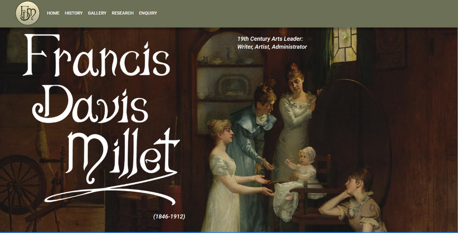It wasn't really until this class in my third semester that I really started to experience what it was like to work on a development team. I would also be working in an entirely new environment that I was not familiar or comfortable with. Interaction Design Practicum was the name of the class, and it really taught me a lot. Not only did I have to work within a team for the first time, but I also had to take into account the considerations from the client we were doing the development for. Tack onto those challenges another one because I also was working within WordPress for the first time. It wasn't at all what I was familiar with which was the freedoms of coding something from scratch. There were some hurdles that I jumped in this class. There was also some great lessons that I learned from this class. In the end though, I was proud of the progress that me and my teammate made on the website and I hope to revisit the site a few years later and see it the way that my client intends it to look.
Digital Media For Intercultural Communications
My third semester also included a course that I wasn't too sure about what to expect from at first. Digital Media For Intercultural Communications stated in its syllabus that upon completion of the course, I would be able to analyze and evaluate global or intercultural issues, discuss stereotypical cultural conceptions and recognize the complexity and variety of different cultural groups, identify tools, technologies, and development practices that enable accessibility to digital materials, as well as many other course objectives that were listed. That sounds like a lot to a student who was planning on a lot more coding than reading and writing. What I learned from this course I think cannot be comparable to learning another programming language or skill though. Prior to this class, I hadn't realized how I often went into developing a website with the mindset of all of the users being just like me. I am glad that I took this class because it helped me understand how there are considerations that I need to take as the creator of a product. After taking this class, I now understand that accessibility is more than just one of the options in the settings you find in a video game menu screen.
Digital Lecture Series
What's a great way to learn more about digital media and how to better market yourself to companies or your designs to your audience? Why not learn from some professionals in your field? Honestly, I am still baffled at how many connections the Digital Media department at UVU has. There are some amazing titans from the Digital Media world that either trace their roots back to UVU or have connected to the department in some other way. The Digital Lecture Series class was a great experience. There were so many great topics that were covered throughout the semester in this class by so many amazing speakers. At the very least I learned a little bit more about how to do effective presentations since it seemed like all of the guest speakers we had were Ted Talk gurus themselves. At most I learned how to impress future employers, work hard in my career field, and create compelling designs that help my work stand out from the crowd.
Principles of Web Languages
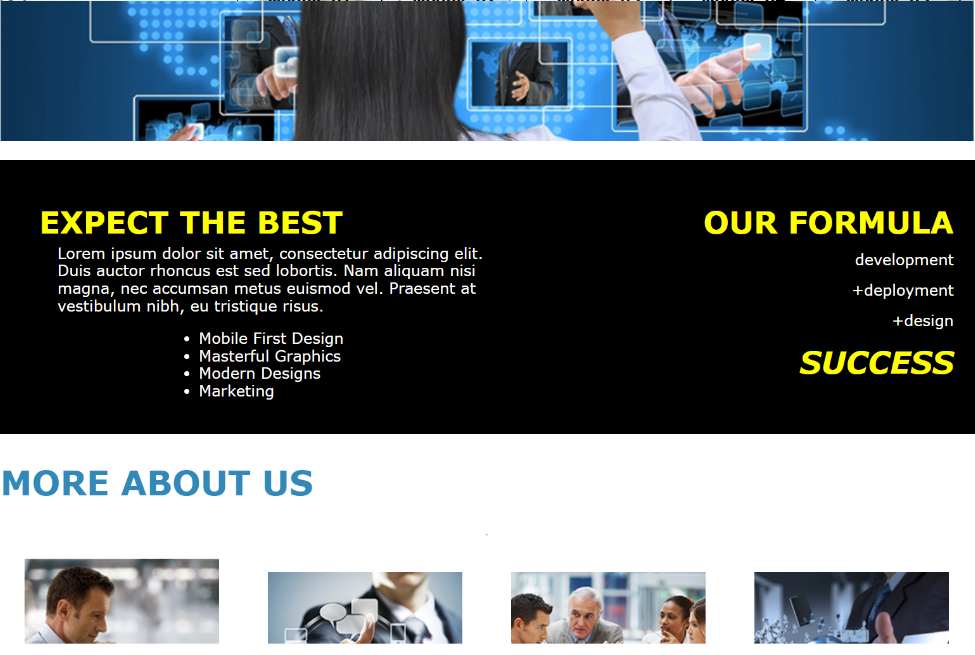Principles of Web Languages was the last class that I took in my third semester at UVU. This course was meant to teach how to build responsive layouts, implement a SASS CSS preprocessor, demonstrate various navigation techniques for all screen sizes, as well as many other learning objectives. I would definitely agree with the responsive layout portion of that list because that was something that was always in the back of my head when writing the code for these sites. Using a SASS CSS preprocessor was new to me in this class, but it was a welcome introduction. I really enjoyed writing code in an SCSS file and seeing it then populate in my CSS file, that is, when the preprocessor wasn't deciding to randomly go down. I think that in this class I started to notice some improvements to my design at least compared to the web essentials class that I took a few semesters back.
Interaction Design
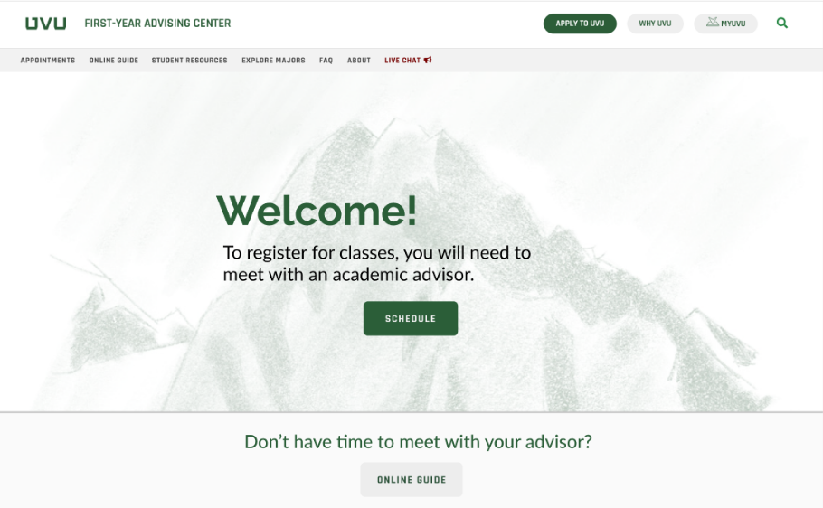This semester I took a class called Interaction Design. The course objectives for this class included recognizing and utilizing important interaction design terms, practices, principles, and strategies, conduct a simple usability study, design and create a prototype, and test the prototype, and participate effectively as a team member in team design activities among other things. The client that we worked with in this class was the First-Year Advising Center at UVU. As you can see on the right, there were complete overhauls that we did to their site, especially the landing page. We learned about the process of putting together a design. We started with audience observations, surveys, and asking ourselves the basic questions of what we want the site to achieve. After that we moved to putting together skeleton designs, wireframes, and surface compositions. After all of that work we put together a final design and presented it to our client. Much of what I learned from this class came from working with my team though. Sure there were design principles that we put into practice, but exercising communicating skills and experiencing the challenges and benefits of working in a team were the big takeaways for me.
Web Content Management
Web Content Management was another course that I took this semester. The syllabus stated that at the end of this course I should know how to install WordPress manually, build a responsive HTML theme using a CSS preprocessor and SASS, use PHP and JavaScript to build a multipage site, upload using FTP to a real web server, and much more. I don't think that I can characterize what I learned in this class better. This course taught me how to use PHP, FTP, and WordPress and the advantages of using such tools/languages. I think that if I were to have taken this class before Interaction Design Practicum I would have felt a lot more comfortable with working in WordPress and maybe would have been able to get some more done for my client at the time especially if I would have known how to make my own WordPress plugin. I have no doubt that the skills that I learned in this class will help me in my future career with website development.
Digital Marketing Analytics
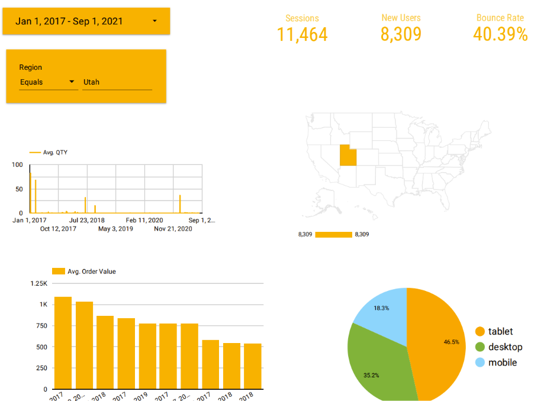The last class that I've taken so far that I'll talk about is Digital Marketing Analytics. In this class I had the opportunity to obtain Google certifications in Google Analytics, apply advanced digital marketing skills in evaluating companies' marketing efforts, critique digital marketing decisions based on web analytics metrics, and gain a systematic understanding of digital marketing analytics concepts. Classes prior to this talked about what could be done to a design or the functionality of a site whether through UI elements or other design principles, but they never really covered how you could know if you were doing well in attracting an audience to your site and more importantly keeping them there and getting them to interact with the site. This class taught me how to measure those dimensions. I never knew how much diverse data you can get from web analytics. It was interesting to me to not only learn how to run the reports that gave me vital information about a site, but also how to interpret that data and use what the data has to say to make informative decisions on what should be done to improve traffic, loyalty, and interactions for the site.
Internship
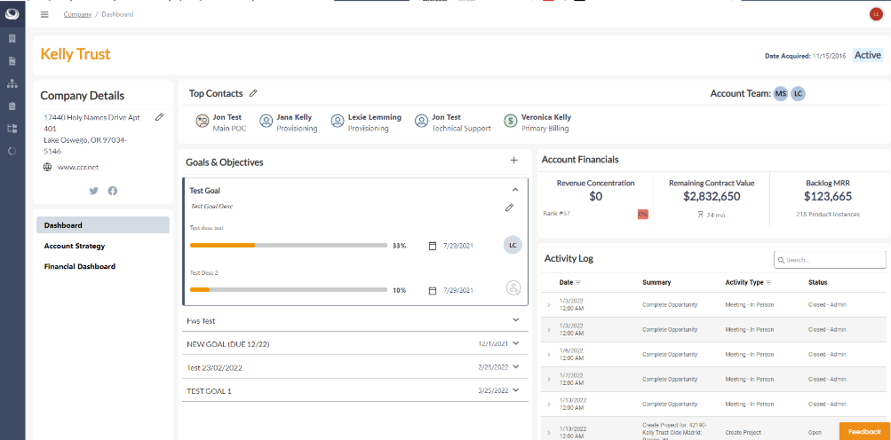I've been enough fortunate to have been able to work remotely as an intern at a company in Iowa called Circle Computer Resources. My responsibilities include accessing databases, creating API endpoints, and formatting and styling webpages just to name a few. I mostly work in the internal webpages of the company and improve the acquisition of client information for our sales team. I have done a number of things throughout my time at CCR, but my biggest achievement was publishing a completely new interface for the client companies' dashboard. Throughout this process I not only need to implement the new features, but I am also creating the data link from our database to the interface through an API endpoint, handling bugs, and constantly testing the new features. In my job I am able to get some hands-on experience with some well-written code and apply the skills that I am learning in the classroom to the real world.